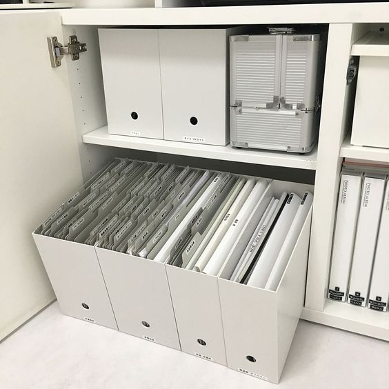
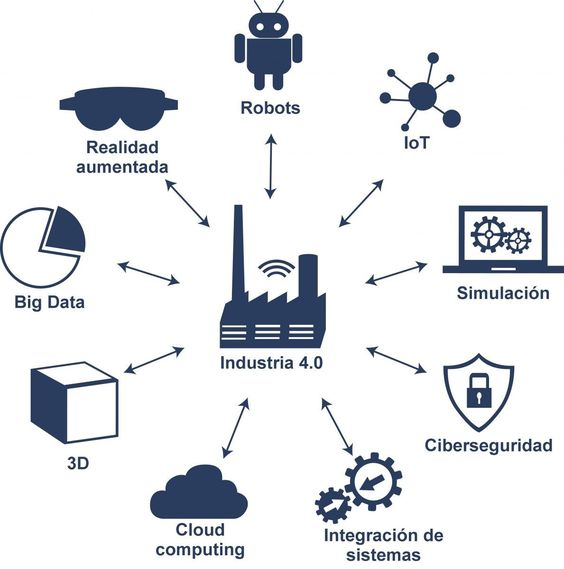

Equipo computacional:
Hardware necesario para que el sistema de información funcione, integrado por computadoras y equipo periférico conectado a ellas.
Recurso humano:
Son las personas que interactúan con el sistema de información, suministran datos o utilizan el sistema para generar datos.
Fuentes:
Son los datos e información que se introducen en el sistema, es decir, son las entradas requeridas para que el sistema informático funcione.

Programas:
Software ejecutado por la computadora, el cual procesa la información de entrada para generar los resultados esperados.
Telecomunicaciones:
Abarca el software y hardware que permite la transmisión en forma electrónica de texto e imágenes, entre otros.

Políticas y reglas de operación:
Aplicada a los procedimientos y mecanismos para hacer que una aplicación de computadora trabaje de acuerdo con estas o regir la parte funcional del proceso administrativo de la empresa.